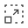
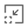
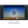
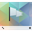

Breeze
Diese Seite stellt eine Sammlung einiger Icons aus dem Breeze Projekt  bereit, die auf jeder Seite genutzt werden können. Die Breeze Icons sind die Standard-Symbole bei KDE 5. Sie stehen unter der GNU Lesser General Public License (LGPLv3).
bereit, die auf jeder Seite genutzt werden können. Die Breeze Icons sind die Standard-Symbole bei KDE 5. Sie stehen unter der GNU Lesser General Public License (LGPLv3).
Eingebunden werden sie normalerweise über
[[Bild(Wiki/Icons/Breeze/Name_des_Icons.png,Wunschgröße,Ausrichtung)]]
Beispiel: [[Bild(Wiki/Icons/Breeze/accessories-text-editor.png, 14,)]] ergibt
| Dokument | |||
| Icon | Dateiname | Icon | Dateiname |
| Breeze/bookmark-new.png | Breeze/document-new.png | ||
| Breeze/document-open.png | Breeze/document-print.png | ||
| Breeze/document-save-as.png | Breeze/document-save.png | ||
| Breeze/document-properties.png | Breeze/edit-clear.png | ||
| Breeze/edit-copy.png | Breeze/edit-cut.png | ||
| Breeze/edit-delete.png | Breeze/edit-find.png | ||
| Breeze/edit-paste.png | Breeze/edit-select-all.png | ||
| Breeze/folder-new.png | Breeze/view-calendar-day.png | ||
| Dateityp | |||
| Icon | Dateiname | Icon | Dateiname |
| Breeze/audio-x-generic.png | Breeze/image-x-generic.png | ||
| Breeze/pdf.png | Breeze/text-x-generic.png | ||
| Breeze/video-x-generic.png | |||
| Navigation | |||
| Icon | Dateiname | Icon | Dateiname |
| Breeze/go-bottom.png | Breeze/go-down.png | ||
| Breeze/go-first.png | Breeze/go-home.png | ||
| Breeze/go-jump.png | Breeze/go-last.png | ||
| Breeze/go-next.png | Breeze/go-previous.png | ||
| Breeze/go-top.png | Breeze/go-up.png | ||
| Internet | |||
| Icon | Dateiname | Icon | Dateiname |
| Breeze/internet-mail.png | Breeze/internet-telephony.png | ||
| Breeze/internet-web-browser.png | |||
| Netzwerk | |||
| Icon | Dateiname | Icon | Dateiname |
| Breeze/network-wired.png | Breeze/network-wireless.png | ||
| Breeze/network-connect.png | Breeze/network-disconnect.png | ||
| Listen | |||
| Icon | Dateiname | Icon | Dateiname |
| Breeze/list-add.png | Breeze/list-remove.png | ||
| Multimedia | |||
| Icon | Dateiname | Icon | Dateiname |
| Breeze/media-eject.png | Breeze/media-playback-pause.png | ||
| Breeze/media-playback-start.png | Breeze/media-playback-stop.png | ||
| Breeze/media-record.png | Breeze/media-seek-backward.png | ||
 | Breeze/media-seek-forward.png | Breeze/media-skip-backward.png | |
| Breeze/media-skip-forward.png | Breeze/media-playlist-shuffle.png | ||
| Breeze/media-playlist-repeat.png | Breeze/view-media-equalizer.png | ||
| System | |||
| Icon | Dateiname | Icon | Dateiname |
| Breeze/folder.png | Breeze/folder-remote.png | ||
| Breeze/process-stop.png | Breeze/system-log-out.png | ||
| Breeze/system-run.png |  | Breeze/system-search.png | |
| Breeze/system-shutdown.png | Breeze/user-desktop.png | ||
| Breeze/user-home.png | Breeze/user-trash.png | ||
| Breeze/system-users.png | Breeze/tools-report-bug.png | ||
| Ansichtsmodi | |||
| Icon | Dateiname | Icon | Dateiname |
| Breeze/view-fullscreen.png | Breeze/view-refresh.png | ||
| Breeze/zoom-best-fit.png |  | Breeze/zoom-in.png | |
| Breeze/zoom-original.png |  | Breeze/zoom-out.png | |
| Hardware | |||
| Icon | Dateiname | Icon | Dateiname |
| Breeze/audio-card.png | Breeze/audio-headset.png | ||
| Breeze/camera-photo.png | Breeze/camera-web.png | ||
| Breeze/computer.png | Breeze/computer-laptop.png | ||
| Breeze/cpu.png | Breeze/drive-harddisk.png | ||
| Breeze/drive-removable-media.png | Breeze/input-gaming.png | ||
| Breeze/input-keyboard.png | Breeze/input-mouse.png | ||
| Breeze/input-tablet.png | Breeze/media-flash-memory-stick.png | ||
| Breeze/media-flash-sd-mmc.png | Breeze/media-floppy.png | ||
| Breeze/media-optical-audio.png | Breeze/media-optical.png | ||
| Breeze/media-optical-recordable.png | Breeze/modem.png | ||
| Breeze/multimedia-player.png | Breeze/printer.png | ||
| Breeze/scanner.png | Breeze/smartphone.png | ||
| Breeze/tablet.png | Breeze/video-display.png | ||
|  | Breeze/video-television.png | Breeze/battery.png | |
| Einstellungen | |||
| Icon | Dateiname | Icon | Dateiname |
| Breeze/preferences-activities.png | Breeze/preferences-desktop.png | ||
| Breeze/preferences-desktop-accessibility.png |  | Breeze/preferences-desktop-color.png | |
| Breeze/preferences-desktop-cryptography.png | Breeze/preferences-desktop-default-applications.png | ||
| Breeze/preferences-desktop-display.png |  | Breeze/preferences-desktop-filetype-association.png | |
| Breeze/preferences-desktop-font.png | Breeze/preferences-desktop-gaming.png | ||
| Breeze/preferences-desktop-icons.png | Breeze/preferences-desktop-keyboard.png | ||
| Breeze/preferences-desktop-locale.png | Breeze/preferences-desktop-mouse.png | ||
| Breeze/preferences-desktop-notification.png | Breeze/preferences-desktop-peripherals.png | ||
| Breeze/preferences-desktop-screensaver.png | Breeze/preferences-desktop-sound.png | ||
| Breeze/preferences-desktop-text-to-speech.png | Breeze/preferences-desktop-theme.png | ||
| Breeze/preferences-desktop-user-password.png | Breeze/preferences-desktop-user.png | ||
| Breeze/preferences-desktop-wallpaper.png | Breeze/preferences-system-bluetooth.png | ||
| Breeze/preferences-other.png | Breeze/preferences-system.png | ||
| Breeze/preferences-system-login.png | Breeze/preferences-system-network-sharing.png | ||
| Breeze/preferences-system-power-management.png | Breeze/preferences-system-time.png | ||
| Breeze/preferences-system-windows.png |  | Breeze/preferences-system-session-services.png | |
| Anwendungen | |||
| Icon | Dateiname | Icon | Dateiname |
| Breeze/accessories-text-editor.png | Breeze/akregator.png | ||
| Breeze/amarok.png | Breeze/applications-internet.png | ||
 | Breeze/applications-games.png | Breeze/applications-other.png | |
 | Breeze/baloo.png | Breeze/digikam.png | |
| Breeze/hwinfo.png | Breeze/k3b.png | ||
| Breeze/konversation.png | Breeze/kontact.png | ||
| Breeze/office-calendar.png | Breeze/partitionmanager.png | ||
| Breeze/system-software-update.png | Breeze/terminal.png | ||
| Breeze/utilities-file-archiver.png | |||
| Embleme | |||
| Icon | Dateiname | Icon | Dateiname |
| Breeze/emblem-error.png | Breeze/emblem-information.png | ||
| Breeze/emblem-success.png | Breeze/emblem-warning.png | ||
| Breeze/emblem-favorite.png | Breeze/emblem-locked.png | ||
| Breeze/emblem-symbolic-link.png | Breeze/emblem-unlocked.png | ||
| Diverses | |||
| Icon | Dateiname | Icon | Dateiname |
| Breeze/dialog-ok-apply.png | Breeze/face-smile.png | ||
 | Breeze/get-hot-new-stuff.png | Breeze/help-browser.png | |
| Breeze/kde.png |  | Breeze/plasma.png | |
| Breeze/security-high.png | Breeze/security-medium.png | ||
| Breeze/security-low.png | Breeze/user-identity.png | ||
- Erstellt mit Inyoka
-
 2004 – 2017 ubuntuusers.de • Einige Rechte vorbehalten
2004 – 2017 ubuntuusers.de • Einige Rechte vorbehalten
Lizenz • Kontakt • Datenschutz • Impressum • Serverstatus -
Serverhousing gespendet von